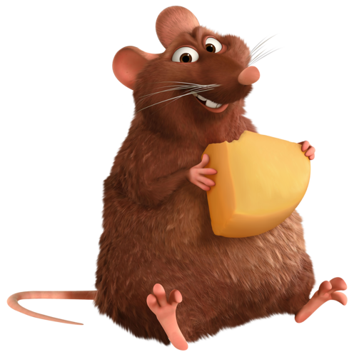
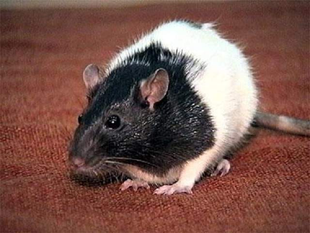
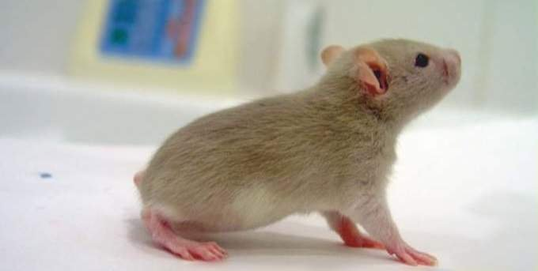
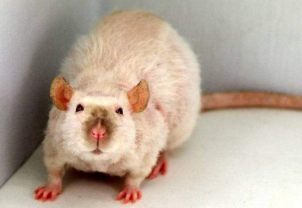
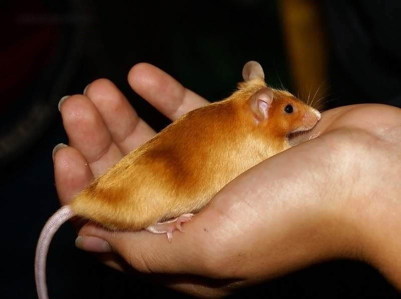

Наш ассортимент
| 1.
|

|
Декоративные крысы породы стандарт
Это самая популярная разновидность домашних крыс. Крысы этой породы имеют глянцевую гладкую шерсть.
Тело декоративной крысы вытянутое, довольно крупное, его длина достигает 24 сантиметра, а вес доходит до 500 г.
Хвост у основания толстый, его длина составляет 20 сантиметров. Уши округлые, небольшие, приземистые.
|
250 гривен
|
| 2.
|

|
Бесхвостые крысы
Как ясно из названия, у этих крыс не имеется хвостов.
Данная порода представляет собой результат мутации.
Первую бесхвостую крысу получил в 1983 году любитель.
Эта разновидность имеет несколько иную форму тела, чем крысы породы стандарт, туловище имеет грушевидную форму.
У представителей этой породы не должно быть даже зачатка хвоста.
|
150 гривен
|
| 3.
|

|
Рексы
Крысы этой породы имеют кудрявую плотную шубку, она более грубая, чем у разновидности стандарт и не такая блестящая.
Количество осевых волос шерсти незначительное. Усы у рексов короткие и закрученные.
|
350 гривен
|
| 4.
|

|
Дамбо
Это порода крыс с большими ушами.
Данную разновидность получили в 1991 году в Калифорнии.
Название породе дали в честь мультипликационного слона Дамбо.
Уши низко посажены, округлой формы. Голова шире, чем у представителей других пород, при этом мордочка относительна заостренная.
Форма тела у крыс дамбо грушевидная, как у бесхвостых крыс, но более короткая.
|
300 гривен
|
|